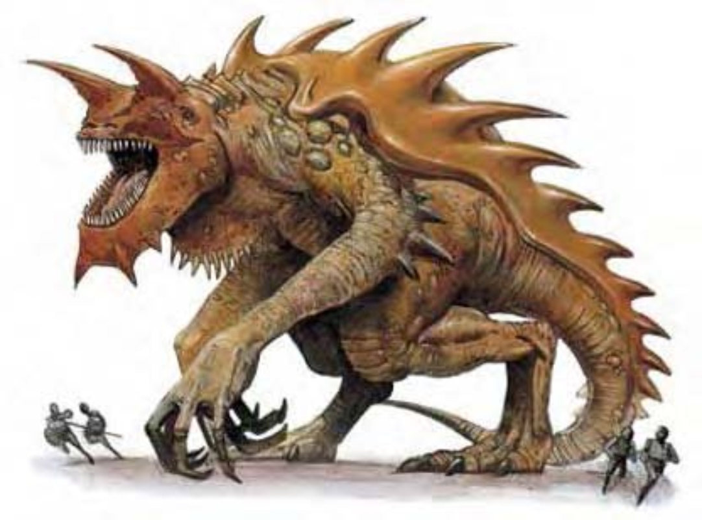

这种恐怖的双足生物约有五层楼高。他的姿态像是猛禽，倾身向前并用强力的巨尾保持平衡。头上有两支犄角，背上则有具反射能力的厚甲壳。
除了最大的龙以外，所有怪物中最可怕的可能就是泰拉斯奎巨兽了。幸好，他只有一头，但没有人可以预料这头生物会在何时何地出没袭击。
泰拉斯奎巨兽的巢穴所在是个谜，他多半都处于休眠状态。他的蜇伏期为6d4个月，之后会离巢猎食1d3天。他每十年会进入一次长达1d2周的活动期，之后就会沉睡4d6年，除非被人吵醒。
处于活动期时，泰拉斯奎巨兽是完美的破坏机器。他会粗暴地横越整块大陆，沿途吞下所有事物，包括动植物、人形生物甚至整个城镇，没有人能幸免于难。所以各社群都宁愿连夜拔营而走，也不愿面对他的力量。
关于泰拉斯奎巨兽的起源与目的一直都众说纷纭，传说四起。有人说他是被遗忘的古老众神为了惩罚世人，释出憎恨所集结而成的产物；也有人说这是邪恶法师和冷酷的精灵之力所制造的阴谋。然而这些传说都只是臆测，这一生物的真正本质可能仍然是一团谜。泰拉斯奎巨兽并没有兴趣现身说法，也很少留下看过他醒时模样的见证人。
泰拉斯奎巨兽约70英尺长，50英尺高，重达130吨。
泰拉斯奎巨兽不会说话。
| 资料栏位 | 泰拉斯奎巨兽 (Tarrasque) 超巨型魔法兽 |
| 生命骰 | 48d10+594 (858HP) |
| 先攻 | +7 |
| 速度 | 20英尺 (4格) |
| 防御等级 | 35 (-8体型、+3敏捷、+30天生)、接触5、措手不及32 |
| 基本攻击/擒抱 | +48 / +81 |
| 攻击 | 啮咬+57近战 (4d8+17 / 18-20 / x3) |
| 全力攻击 | 啮咬+57近战 (4d8+17 / 18-20 / x3) 及2犄角+52近战 (1d10+8) 及2爪抓+52近战 (1d12+8) 及尾巴拍击+52近战 (3d8+8) |
| 占据/触及 | 30英尺 / 20英尺 |
| 特殊攻击 | 强力致命击、威势、精通擒抱、暴冲、生吞 |
| 特殊能力 | 甲壳、伤害减免15/史诗、对火焰、毒素、疾病、吸能、属性伤害免疫、再生40、灵敏嗅觉、法术抗力32 |
| 豁免 | 强韧+38、反射+29、意志+20 |
| 属性 | 力量45、敏捷16、体质35、智力3、感知14、魅力14 |
| 技能 | 聆听+17、搜索+9、侦察+17、生存+14 (追踪+16) |
| 专长 | 警觉、震山击、盲战、顺势斩、战斗反射、闪避、强力顺势斩、精通冲撞、精通先攻、钢铁意志、猛力攻击、健壮 (6) |
| 环境 | 任何 |
| 组织 | 单独 |
| 宝藏 | 无 |
| 阵营 | 总是绝对中立 |
| 进化 | 49+HD (超巨型) |
| 等级修正值 | ― |
泰拉斯奎巨兽使用利爪、尖牙、犄角与尾巴进行攻击。
在计算伤害减免时，泰拉斯奎巨兽的天生武器视为史诗武器。
强力致命击 (特异)：泰拉斯奎巨兽的啮咬攻击造成重击的威胁范围是18到20，可造成三倍伤害。
威势 (特异)：泰拉斯奎巨兽冲刺或攻击时都会造成恐惧。受影响的生物必须通过意志检定 (DC=36)，否则会陷入颤栗状态，直到远离泰拉斯奎巨兽60英尺以上。豁免检定DC的调整值与魅力调整值相同。
精通擒抱 (特异)：当泰拉斯奎巨兽啮咬到超大型以下的对手时，即可利用即时动作进行啮咬攻击 (视为擒抱)，且不会引发对方借机攻击。如果啮咬成功，则可定住对手，并在次轮生吞对手。
暴冲 (特异)：平常缓慢移动的泰拉斯奎巨兽每分钟可使用此能力1次，使速度达到150英尺。
生吞 (特异)：如果对手的体型在超大型以下，且被泰拉斯奎巨兽的嘴咬住 (见前述"精通擒抱")，则一旦泰拉斯奎巨兽通过擒抱检定，就可将对方生吞下去。泰拉斯奎巨兽的消化液每轮会造成对手2d8+8点酸蚀伤害及2d8+6点强酸伤害。被生吞的对手可试着用轻型穿刺或挥砍武器来打开一条生路，在对消化道 (AC=25) 造成50点以上伤害后，可破开一道足以逃脱的开口。一旦一个被生吞的生物逃脱，则肌肉运动会将这道开口封起，其他被生吞的生物必须另行逃脱。
泰拉斯奎巨兽的食道可容纳2个超大型、8个大型、32个中型、128个小型及512个微型以下的生物。
甲壳 (特异)：泰拉斯奎巨兽的甲壳与盾类似，特别坚硬，反射度高，可挡御所有射线、直线、锥状甚至"魔法飞弹"法术。除了抵消之外，还有30%机率会将法术效果反射回施法者身上。要击破该生物的法术抗力前，先掷骰决定是否产生反射。
再生 (特异)：任何形式的攻击都无法对泰拉斯奎巨兽造成致命伤害。即使对"解离术"或死亡效果的豁免检定失败，泰拉斯奎巨兽仍可再生。如果遇上具有即死效果的法术 (例如前文所列)，且泰拉斯奎巨兽豁免检定失败，则该法术或效果会对他造成等同于最大生命值+10点 (或868点) 的非致命伤害。泰拉斯奎巨兽对具有潜伏期或会流血的效果免疫，像是腐尸症、兽化等。如果遇上具有"血光"的剑或黏土魔像的"诅咒伤害"，只有造成等同于最大生命值+10点 (或868点) 的非致命伤害或施展"奇迹术"时才能杀害泰拉斯奎巨兽。
技能：泰拉斯奎巨兽在进行"聆听"与"侦察"检定时具有+8种族加值。